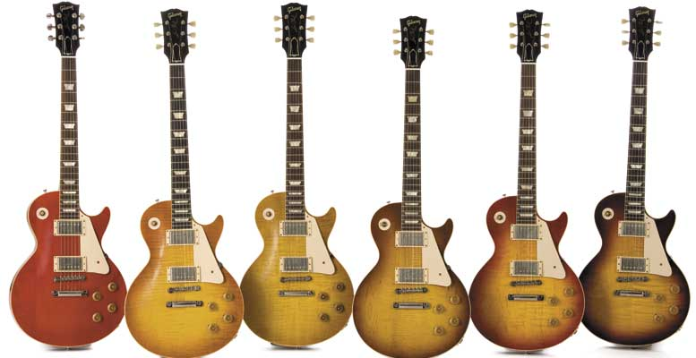

Gibson Les Paul®
The Les Paul Traditional Pro gives you the to-die-for vintage look and feel of the very first Les Paul Standards. With BurstBucker pickups to replicate the sound of Gibson’s original “Patent Applied For” pickups and three classic finishes to choose from, your friends will swear you just cashed in your life’s savings to afford this gem. With a slim, comfortable ’60s neck, a gorgeous maple top, mahogany body, rosewood fingerboard and luxe details like antique binding and a mother-of-pearl Gibson logo, this guitar is the total package.